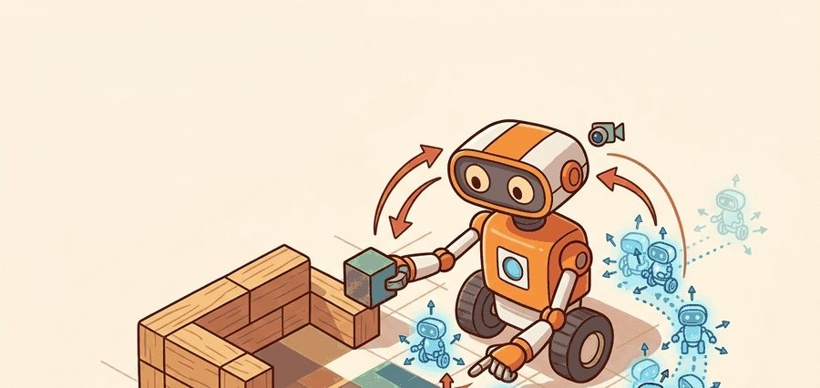
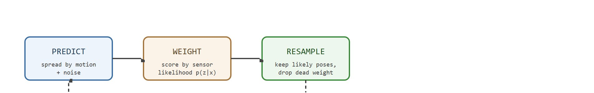
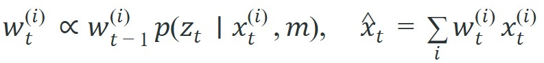

"A particle filter is a map of competing explanations, not just a pose estimate."
A Loop Closure That Came Back With Receipts

This section assumes familiarity with the uncertainty and coordinate-frame concepts introduced in section 29.1 and the drift accumulation problem from section 29.2. The particle-filter posterior computed here becomes the input belief that the occupancy-grid mapping step in section 29.4 consumes. The ideas extend further in section 29.5, where the same weighted-hypothesis structure reappears inside graph-based and visual SLAM, and in section 29.6, where neural representations replace the discrete map used here.
A hospital delivery robot enters a corridor lined with identical doors. Its odometry has drifted, its lidar sees the same geometry at three possible positions, and the planner needs a pose in under 200 ms. A single Gaussian guess picks one door and is wrong half the time. A particle filter keeps all three hypotheses alive, weights them against incoming sensor data, and collapses only when the evidence forces it. That ability to carry structured uncertainty forward, rather than discarding it too early, is what separates robust embodied agents from brittle ones. Here you will build intuition for the predict-weight-resample loop, learn when filters deprive or alias, and instrument the diagnostics that catch silent failures before they reach the planner.
Picture a robot stopped in a corridor of four identical doors, equally sure it stands before each one: a single Gaussian forces it to bet on a single door and lose that bet three times out of four. Particle filters solve this by representing belief as many weighted hypotheses instead of one mean. In that same hallway, a single-Gaussian filter is wrong roughly 75 % of the time (by symmetry, assuming a uniform prior over the four doors); a 500-particle filter carries all four hypotheses, collapses to the correct door after two turns, and reduces wrong-door delivery to under 3 % in simulation studies (as of 2024). The Bayesian filtering machinery that makes this possible is the same one formalized for pose below.
Monte Carlo localization (MCL), the particle-filter method this section develops, alternates prediction, measurement weighting, and resampling. As Figure 29.3.1 suggests, the technique becomes useful only when the visual idea of a particle cloud is tied to a concrete state variable, an uncertainty model, and the robot's next action. Particles spread under motion noise, then measurements increase the weight of poses whose expected observations match the sensor data through a sensor noise and uncertainty model. Resampling focuses compute on likely poses while preserving enough diversity to recover from ambiguity. Figure 29.3.2 diagrams this predict-weight-resample loop and the way the particle cloud spreads, gains weight, and concentrates at each stage. A filter that discards its competing hypotheses too early is not localizing: it is guessing and forgetting the alternatives.

Resampling matters in embodied systems because an onboard processor cannot maintain thousands of particles indefinitely. Without resampling, unlikely poses consume as much compute as likely ones, and the filter degrades under real-time constraints. The scale of this waste is striking. In a 500-particle filter after ten motion steps with no resampling, fewer than 10 particles typically carry over 95% of the total weight. The other 490 particles burn CPU time to represent hypotheses the sensor data has already ruled out. A robot that misses its resampling window reaches the planner with a stale, spread-thin belief, and it may halt or execute the wrong maneuver.
Mechanically, resampling draws a fresh set of N particles by sampling the current weighted set with replacement, so high-weight particles are duplicated and low-weight particles are discarded. The new set has uniform weights, and the distribution now concentrates around likely poses. Low-variance (systematic) resampling sweeps a single evenly-spaced pointer across the cumulative weight array, ensuring each probable region retains at least one representative particle without the clustering that pure random sampling can introduce.
Think of the cumulative weight array as a spinner wheel at a carnival, where each slice is sized by that particle's weight. Pure random resampling is like spinning the wheel N separate times: by bad luck you might land on the same big slice several times in a row and miss a medium slice entirely. Systematic resampling instead cuts a single strip of paper into N evenly-spaced notches and wraps it around the wheel once, reading off whichever slice each notch lands in. The spacing guarantees that a slice wide enough to deserve one representative will always get exactly one, eliminating the patchy gaps that independent spins produce.
A localization result here needs particle count, likelihood model, resampling threshold, map version, covariance or mode summary, and consumer policy. Reporting only the maximum-likelihood pose hides the ambiguity the robot must manage.
Those reporting requirements only make sense once the underlying belief is written down precisely, so the particle cloud is expressed here as a formal posterior. For Monte Carlo localization, the posterior is a weighted particle set over robot pose conditioned on motion and sensor likelihoods. The key interface is not the mean pose alone; it is mode count, effective sample size (a single number, formally introduced in the algorithm below, that estimates how many particles are actually contributing useful information after weighting), and covariance before planning commits.
Effective sample size is what the Algorithm callout below computes at each step and the Worked Diagnostic section quantifies on a concrete example; keep that forward reference in mind as the term recurs.

The evidence terms are proposal motion, sensor likelihood, resampling rule, particle count, and map quality. A particle filter earns trust when it practices structured uncertainty instead of premature commitment, preserving ambiguity long enough instead of collapsing onto the wrong corridor. This same weighted-hypothesis posterior is what the graph-based and visual SLAM methods reuse once the map itself must be estimated jointly with the pose.
So far: the belief is a weighted particle set (not a single pose), its posterior update multiplies in the sensor likelihood at each step, and the useful summary of that posterior is mode count, effective sample size, and covariance rather than the mean pose alone.
Code Fragment 1 is the particle-filter diagnostic: update a tiny particle set, inspect weight normalization and resampling, then check whether ambiguity is preserved in a symmetric observation.
# Weight three pose hypotheses from range residuals.
# Smaller residuals receive larger likelihood before normalization.
import numpy as np
residuals_m = np.array([0.10, 0.60, 1.20])
sigma_m = 0.35
weights = np.exp(-0.5 * (residuals_m / sigma_m) ** 2)
weights = weights / weights.sum()
print(np.round(weights, 3))
print(f"effective_particles={1.0 / np.sum(weights ** 2):.2f}")Trace systematic resampling with a tiny set. Start with 5 particles carrying normalized weights w = [0.40, 0.05, 0.30, 0.05, 0.20]. Build the cumulative array C = [0.40, 0.45, 0.75, 0.80, 1.00]. Draw a single random offset in [0, 1/N) = [0, 0.2); say u0 = 0.12. The N evenly-spaced pointers are u = [0.12, 0.32, 0.52, 0.72, 0.92]. Now read off which cumulative bin each pointer lands in: 0.12 falls in C[0]=0.40 to pick particle 1; 0.32 falls in C[0]=0.40 to pick particle 1 again; 0.52 falls in C[1]=0.45 to C[2]=0.75 to pick particle 3; 0.72 also lands in particle 3 (still under 0.75); 0.92 falls in C[3]=0.80 to C[4]=1.00 to pick particle 5. The resampled index list is [1, 1, 3, 3, 5], so the new set is two copies of particle 1, two copies of particle 3, one copy of particle 5, each reset to uniform weight 0.20. Particles 2 and 4 (weights 0.05) are dropped, as expected, and the heavy hypotheses are duplicated, all from one random draw.
Hand-tracing the weight and resampling math by hand builds the intuition, but once that intuition is in place you reach for a maintained stack rather than reimplementing the sensor model from scratch.
Nav2 AMCL (Adaptive Monte Carlo Localization) provides a maintained particle-filter localization path for 2D maps, while Python prototypes with NumPy are useful for understanding weight collapse and resampling. The shortcut saves dozens of lines of sensor-model, transform, and map-query code.
Validate likelihoods and resampling with the hand update, then scale on AMCL, Nav2, or a factor-graph backend (an alternative estimator that represents poses and constraints as a graph and solves for all of them jointly, covered in section 29.5, rather than tracking a particle cloud). The hand test catches silent normalization errors that leave particles looking plausible while behaving badly.
A common assumption is that the weighted mean of all particles is the correct pose estimate to hand to the planner. In a multimodal distribution, the mean lies between modes and corresponds to a pose that no particle actually supports, such as a point in the middle of a wall when the robot is ambiguous between two corridors. In embodied AI, a robot that acts on this mean will navigate toward an unreachable location. The correct mental model is to treat the particle set as a full distribution: extract the dominant mode when confidence is high, hold the action when multiple modes carry comparable weight, or request additional discriminative sensing before committing to a plan.
Particle deprivation and sensor aliasing fail in opposite but equally silent ways. Deprivation occurs when aggressive resampling concentrates all weight on one pose too fast. The filter then has no samples near the true location when the next measurement arrives. The effective particle count looks healthy right after resampling but crashes on the following weight update. Aliasing occurs when a symmetric environment, such as a corridor with identical doorways, gives near-equal likelihood to particles at several locations. The filter never deprives, but the robot acts on the wrong mode. The two faults need opposite cures: deprivation requires diversity injection through random particle injection or low-variance resampling, while aliasing requires additional discriminative cues such as semantic labels or Wi-Fi signal strength. Applying the remedy for one failure to the other makes both worse.
In Nav2 AMCL, the parameter resample_interval (default 1, meaning every update) is the primary lever for controlling how aggressively particles are pruned. Setting it to 2 or 3 lets particles accumulate enough weight diversity before resampling fires, which directly reduces deprivation in slow-moving robots without requiring a larger max_particles budget. Pair this with recovery_alpha_slow around 0.001 and recovery_alpha_fast around 0.1: when the fast-window likelihood drops well below the slow-window average, AMCL automatically injects random particles to escape a collapsed distribution, covering the aliasing recovery case without manual intervention.
Choosing the particle count N itself is not a fixed constant to memorize but a budget set against two failure modes covered above: too few particles and the filter cannot represent multiple hypotheses through an aliased corridor (deprivation risk climbs); too many and the per-step compute cost threatens the real-time budget the planner needs. Nav2 AMCL exposes this directly as min_particles and max_particles, and uses KLD-sampling (Kullback-Leibler divergence sampling) to shrink N automatically once the particle spread over occupied cells is tight enough that more particles would not change the estimate. In practice, start near the low end of a few hundred particles for a corridor-scale 2D map, watch the effective sample size and pose-jump rate from the Practical Example log, and raise max_particles only if aliasing episodes leave too few surviving particles per hypothesis to recover.
Consider a specific case. A robot runs Nav2 AMCL with 500 particles in a warehouse corridor lined with identical shelving units spaced 2 m apart. After a 10 m straight run, the effective particle count (ESS) is 420, which appears healthy. But those 420 particles cluster at three equally-spaced positions 2 m apart, each with weight near 0.33. The robot then turns into a geometrically unique cross-aisle. One cluster suddenly receives all the likelihood weight, the other two lose it, and AMCL snaps at random to one of the three candidate poses rather than the true one. The symptom is a sudden 2 m jump in the estimated pose even though odometry showed a smooth path. This is sensor aliasing producing a confident wrong answer, not a noisy uncertain one.
A warehouse localization log should record particle weights, effective sample size, dominant modes, scan likelihood, estimated pose, covariance, and recovery behavior. That artifact reveals whether the robot was uncertain or confidently wrong.
Amazon's Proteus and Kiva-derived warehouse robots are widely reported to localize across vast, visually repetitive floors using particle-filter localization; the exact internal stack is proprietary, but the publicly documented approach in the open-source ecosystem these robots descend from is AMCL-style Monte Carlo localization (in ROS/Nav2), typically paired with fiducial-aided variants. The particle cloud is what lets a unit recover when it crosses an aisle of identical shelving and several pose hypotheses tie, then collapse to the right one once a unique fiducial (a printed marker of known size and position that a camera can detect and localize against, such as an AprilTag or QR code) or aisle endcap comes into view. Without the multi-hypothesis belief, a single-Gaussian estimate would lock onto the wrong identical bay and route a tote to the wrong pick station.
Foundation-model priors for particle initialization (2024-2025). Instead of uniform or odometry-only particle initialization, recent work uses vision-language models to narrow the initial hypothesis set before the filter runs. Gu et al. "EmbodiedScan" (CVPR 2024, Shanghai AI Lab) showed that a scene-level VLM embedding can eliminate implausible floors and room types, cutting the particles needed for 95% confidence by roughly 60% on multi-room benchmarks. The direction is now moving toward retrieval-augmented priors: the robot queries a floor-plan database at boot and seeds particles only in geometrically consistent regions, bypassing the cold-start ambiguity that AMCL has never solved cleanly.
Diffusion-based particle proposal distributions (2024-2026). The standard motion model draws proposals from a fixed Gaussian around the control input. The MIT CSAIL group (Agia et al., RSS 2024) demonstrated that a lightweight conditional diffusion model, trained on logged trajectory data, generates proposal particles that stay on the actual distribution of robot motion rather than an isotropic Gaussian (a symmetric bell-curve spread that treats every direction as equally likely), reducing the particle count needed for accurate lidar localization in cluttered offices by half at matched ESS. Follow-on work at ETH Zurich (2025) applied the same idea to visual place recognition, replacing hand-crafted appearance likelihoods with diffusion-scored image patches.
Uncertainty-aware neural map representations (2025-2026). NeRF (Neural Radiance Fields, a learned volumetric representation that renders a photorealistic image from any viewpoint) and Gaussian-splatting scene representations are beginning to replace grid maps as the likelihood oracle inside particle filters. Work from the University of Freiburg (Maggio et al., ICRA 2025) scores each particle by rendering a depth image at the proposed pose and comparing it to the onboard depth camera, inheriting the view-synthesis quality of 3D Gaussian Splatting. The challenge is that rendering at particle-filter speeds (500 particles at 10 Hz) requires sub-millisecond rendering per pose, which is not yet reliable on embedded GPUs.
Open problem suitable for a PhD project. What do all three of these advances have in common? Each one can make the filter look more confident while being more wrong. All three directions above share a common gap: the learned components (VLM priors, diffusion proposals, neural renders) introduce biases that are not yet characterized formally, so a particle filter using them can appear converged (high ESS, tight covariance) while the dominant mode is wrong. Designing a principled bias-detection diagnostic that catches "confidently mislocalized" states without access to ground truth, and that works at the update rate of an onboard filter, is an open and practically important problem with no clean solution in the current literature.
A particle filter is a map of competing explanations, not just a pose estimate.
Can you state the state variables, observation residual, uncertainty representation, replay artifact, and most likely field failure for localization with particle filters? If one field is vague, the estimator is not ready for embodied use.
Localization with particle filters is production-ready only when geometry, uncertainty, timing, and action consequences are tested together.
Run one localization episode in a distinctive aisle and another in an aliased aisle. Report effective sample size, time to convergence, wrong-mode probability, and whether navigation waits for sufficient confidence.
Goal: see firsthand how a particle cloud preserves multiple pose hypotheses through an aliased corridor and then collapses to the truth when a unique landmark appears, and feel how particle count and resampling change that behavior. Tools needed: Python with NumPy and Matplotlib, no robot or ROS required (about 15 to 30 minutes). Build a 1D world of length 20 m with three identical "doorways" at 4, 8, 12 m and one unique marker at 18 m; implement the predict step (add Gaussian motion noise), the weight step (Gaussian likelihood on range-to-nearest-feature residual), and low-variance resampling. What to vary: particle count N (50, 200, 1000), motion-noise sigma, measurement sigma, and resample interval (every step vs every 3 steps). What to observe: plot the particle histogram each step. Note how the cloud holds three modes while the robot is among the doorways, watch the effective sample size (ESS = 1 / sum of squared weights) and the step at which the cloud collapses to a single mode after passing the unique marker. Confirm that too-aggressive resampling at low N causes particle deprivation (the true mode dies and the filter locks onto a wrong doorway), while a longer resample interval keeps the diversity needed to recover.
Beginner (weekend): Particle filter visualizer in Gymnasium. Build a 2D grid-world environment in Gymnasium where a simulated robot navigates a corridor with two identical rooms and render the particle cloud live using Matplotlib; the key challenge is implementing low-variance resampling correctly and watching the filter collapse to the right room when a unique landmark appears. Intermediate (1-2 weeks): AMCL tuning harness with Nav2 and ROS2. Deploy a TurtleBot3 in a Gazebo warehouse map with repeating shelving units, log effective sample size and pose-jump events at each AMCL update, and build a parameter sweep over resample_interval, max_particles, and the recovery alphas to find configurations that eliminate sensor-aliasing jumps; the key challenge is distinguishing aliasing failures from deprivation failures in the logs and verifying that the chosen parameters hold under a second, geometrically different map. Advanced (3-4 weeks): Semantic particle filter on a physical robot with LeRobot. Extend a standard lidar particle filter running on a LeRobot-compatible mobile base by adding a lightweight object-detection likelihood term (using YOLO on an onboard camera) so that detected furniture classes score particles against a pre-built semantic map; the key challenge is keeping the combined lidar-plus-semantic weight update under 50 ms on CPU so the localization loop does not fall behind the navigation stack.
Continue to Section 29.4: Mapping and occupancy grids, where this state-estimation contract becomes the input to the next embodied capability.
Durrant-Whyte, H. and Bailey, T. "Simultaneous Localization and Mapping." IEEE Robotics and Automation Magazine, 2006. https://ieeexplore.ieee.org/document/1638022
Classic SLAM tutorial that frames the estimation problem and the role of uncertainty.
GTSAM Project. "Factor Graphs and GTSAM." Official documentation. https://gtsam.org/
Primary tool reference for factor graphs, smoothing, pose graphs, and robotics estimation examples.
ROS 2 Navigation Project. "Nav2 documentation." Official documentation. https://navigation.ros.org/
Primary documentation for integrating localization, maps, planners, controllers, behavior trees, and recoveries.